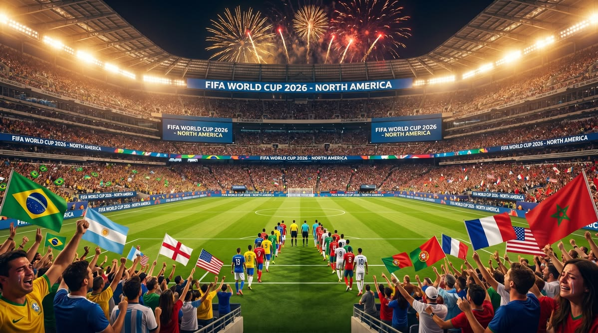

A maior Copa do Mundo da história

A Copa do Mundo de 2026 acontece entre os dias 11 de junho e 19 de julho, sendo disputada nos Estados Unidos, no México e no Canadá. É a primeira vez na história que três países sediam o torneio juntos.
Outra novidade é o formato: pela primeira vez serão 48 seleções, divididas em 12 grupos de 4 times, totalizando 104 partidas em 16 cidades-sede. A abertura é no Estádio Azteca, na Cidade do México, e a grande final será no MetLife Stadium, em Nova Jersey (EUA).
Vídeo de apresentação
Confira o trailer oficial do torneio:
Caso o vídeo não carregue no navegador, assista diretamente no YouTube .
Quer saber mais?
Esses são alguns sites confiáveis para acompanhar tudo sobre o torneio:
Quer ver as seleções classificadas? Vá até a página Seleções.